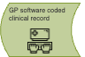
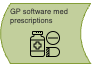
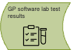
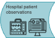
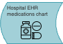
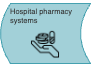
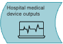
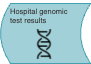
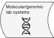

Early preview v0.1
This page contains an overview of different types of software systems, or modules within systems, where a patient may have data generated and recorded across their healthcare journey. These are not descriptions of specific software, but rather a general classification based on the different types of data that are generated.
Patient administration
Patient administration systems (PAS)
Software that capture non-clinical information about patients, and their activity across different care settings (including all hospitals). Information captured includes identities, demographics, and address, and also captures pathway information such as referrals, waiting lists and appointments, as well as inpatient activity and ward movements or discharge. PAS may be standalone software solutions offered by different suppliers, or may be integrated as a function into Electronic Health Records (EHR) software. PAS also serves as a master patient index for other records in the care location. PAS are joined directly to the national Personal Demographics Service, which is a live, national directory of non-clinical information for patients that is part of the NHS Spine.
Primary care
GP software demographic record
Much like PAS systems, these are parts of a GP Electronic Health Record (EHR) software that maintain a record of non-clinical information for patients, including their GP registration history. Patient details across different GP systems are coordinated through a Primary Care Registration Management service and also synced with the Personal Demographics Service. Data may be accessible to analysts via data tables containing patient identifiers, demographic, address, and registration information.
GP software coded clinical record

When patients see a clinician, or undergo procedures and tests, or experience medical diagnoses, symptoms, and events, these data are entered into the record as ‘clinical codes’. Coding is performed manually, largely by GPs during or following consultations, or after reviewing letters and results. There are hundreds of thousands of codes that represent unique clinical concepts, and large vocabularies or dictionaries that define these. The most commonly used for primary care in the NHS is SNOMED CT. Codes are typically stored in data tables. A simple example of part of such a table is below:
| 123456789 |
2020-1-1 |
Pre-diabetes (disorder) |
858301000000107 |
| 123456789 |
2021-1-1 |
Diabetes mellitus type 2 (disorder) |
44054006 |
| 123456789 |
2024-1-1 |
Retinopathy due to diabetes mellitus (disorder) |
4855003 |
GP software medication prescriptions

When a prescription for a medication is generated, either one off or as a repeat prescription, this information is recorded in the GP EHR. This information is used to send prescriptions to a dispenser (like a local pharmacy), as well as populate the patient’s Summary Care Record with their current medications. The GP EHR also contains records of requests - such as when a patient asks for a prescription to be renewed.
GP software laboratory test results

Results from tests and other measurements can be entered into the record by clinicians, and are usually stored as separate tables that also capture result values and outcomes. In many cases, where tests originated in primary care and where there is interoperability between pathology services and the EHR, these values are automatically sent into the system once results are ready.
GP software free text clinical record
While GPs make effort to code important information about their patients, a large amount of additional information is found in the unstructured, or free text, record. This simply includes blocks of text that are written to describe encounters and other interactions. As part of the medicolegal record, such text typically contains patients’ descriptions of their medical history, symptoms, and other experiences, as well as examination findings and clinical thought processes. Free text data is not readily accessible for analysis, and may also contain idenfitiable information.
Secondary / tertiary care
Hospital EHR coded clinical record
Data that is coded at point of care is less common in secondary care when compared to primary care, but some Electronic Health Record (EHR) systems such as Epic enable the entry of standard codes such as SNOMED CT into a patient’s record. More commonly, data may be “semi-structured” through forms or flowsheets, where records are made with specific fields (such as “medical history”, “recorded symptoms”, and “examination findings”).
Hospital EHR free text clinical record
The vast majority of patient data in secondary care is found as free text. This includes narrative that records the details of encounters between clinicians and patients (from admission to ward rounds and discharge), as well as records of procedures and operations, nursing and allied health professional notes, and clinical thought processes (for example from a cancer multi-disciplinary meeting). This also includes discharge summaries, clinical letters, and reports of investigations such as radiology imaging or pathology. These type of data may be in different electronic formats, such as MS Word and pdf files, and often contain valuable information that is not found in the structured record. The traditional way of making this type of data analysable, is through health professionals or clinical coders manually collecting relevant data items, and inputting them into a table. Some of this process is being automated by language artificial intelligence (AI) platforms.
Hospital EHR lab test results
In secondary care settings, laboratory test results and other clinical measurements are also captured in data tables. Laboratory results are often managed through dedicated Laboratory Information Management Systems (LIMS) which are part of, or interface with, the main hospital EHR. Data can be used during care for automated alerting of abnormal results, and for viewing trends.
Hospital patient observations

A rich source of information found only in hospital data, are the frequent physiological measurements that are taken of patients. These may range from measures such as height and weight, to blood pressures, heart rates, temperatures, to real-time recording of vital signs using bedside monitoring. The data may be generated and held in different kinds of system, but most hospital EHRs will allow results to be captured into data tables. In hospitals with intensive care units that have EHR, monitors may output directly into data tables and record detailed trends of vital signs.
Hospital EHR medications chart / pharmacy systems
 
Hospital pharmacies use electronic systems to manage general medication orders and dispensing, for both inpatient and outpatient care. For inpatients, electronic medication charts are used by clinicians for viewing and recording prescriptions, timings, and administration, often through Electronic Prescription and Medications Administration (EPMA) systems. The data underlying these systems can be used to show what medications and dosages were prescribed, dispensed, and administered. These systems are often part of or interfaced with the main EHR. They may also integrate decision support features for drug interactions and dosing.
Hospital EHR chemotherapy chart
While most medications are prescribed and administered in the general record, specialised chemotherapy systems are often used to administer cytotoxic agents, in both inpatient and outpatient/‘day case’ settings.
Medical device outputs

Numnerous types of modern medical device, ranging from electrocardiogram machines, to ventilators and infusion pumps, have the capability to output data directly into information systems. Some signals data may be stored in time-series databases (for example - infusion rate every hour). Other device outputs may be stored as scanned images. Many devices do not interface with EHR, or do not have a way to extract data in an analysable form.
Histopathology results and reports
Digital pathology systems are increasingly used to capture, store, and analyze high-resolution images of histopathology slides. These systems allow for remote viewing, automated image analysis, and integration with other clinical data sources. The associated pathology reports are often stored as free text within the Laboratory Information System.
Genomic testing reports

While raw sequencing data is generated in genomics testing labs, these data are not typically available for analysis or clinical use. Instead, reports of gene panels, or reports of specific genetic mutations or biomarkers, are passed to hospitals and stored as free text files (e.g. in .pdf format).
Specialist testing

Molecular/genomic laboratory network systems
Genomic testing in the NHS is provided through a national testing network. Specifically, the testing for mutations within tumours (somatic molecular testing) is handled by a network of molecular diagnostic laboratories. The direct results from these tests (e.g. sequencing data) are held locally and not directly available for research or analysis use-cases. However, data are passed back to hospitals as reports.
Version history
version 0.1 24-08-01: first version of key sources